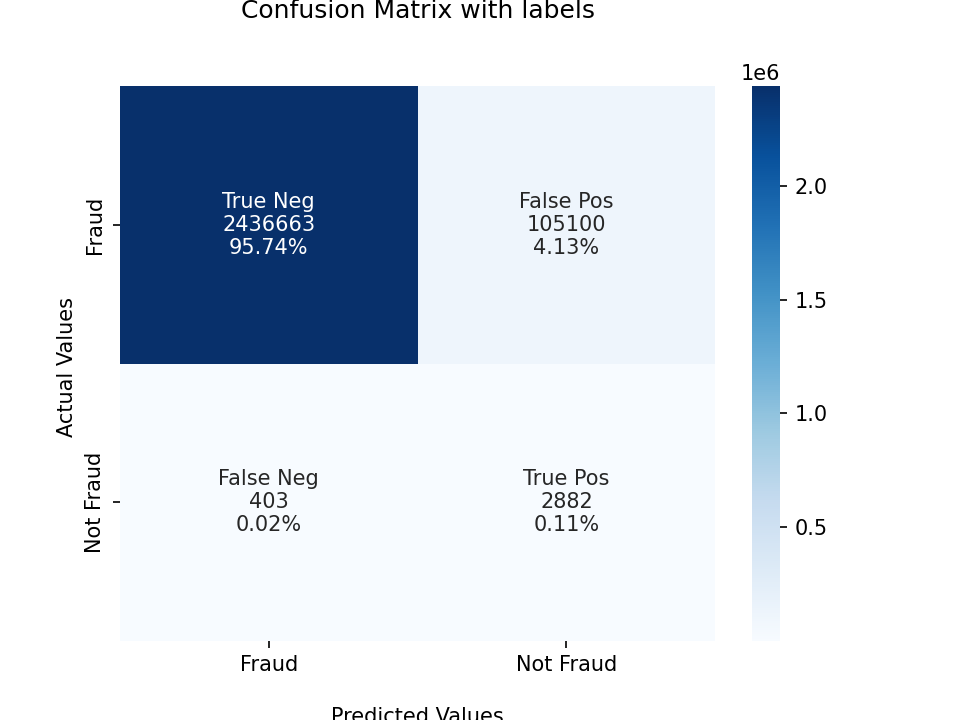

Models (v2 and v3)
These was the steps of the model-v2 using Logistic Regression, I also used feature engineering and numerical and categorical transformations.
On the logistic regression was applied the class_weight parameter, with the following values:
class_weight: "balanced" and {0: 0.10, 1: 0.90}
Those models are 21_01_22_lr_w_v1.sav for dict-like params, and 21_01_22_lr_w_v2.sav
Pipeline
graph TD
A[Transformed Data: second-eda-output.csv] --> B[Type conversion];
B[Type conversion] --> C[Train Test Split];
C[Train Test Split] --> D[One Hot Encoder on all categorical variables];
D[One Hot Encoder] --> E[Fit Logistic Regression];
E[Fit Logistic Regression] -.-> F{tune class_weight}:::tune;
F{Tune class_weight} -.-> G[Predict];
G[Predict] --> H[Calculate Metrics];
classDef tune fill:#f96;
Confusion Matrix
V2

V3
